细胞生物学卡片抽样预览
完整2454张在TXT与cards.json。本页展示图片任务、新增卡和部分关键修订；先作答再展开核心答案。
CELL02-033这两类SEM图分别显示内部断面与外表面。为什么“SEM只能观察表面”不能作为通用结论？
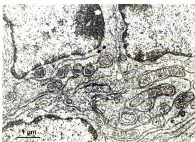
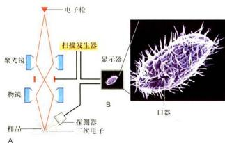
展开答案与图示核对
核心答案
常规二次电子模式主要显示表面形貌；背散射电子结合切面也能显示内部结构。成像信号和制样方式共同决定观察对象。
图示核对
中文教材图 CN0058（图示说明不另计评分）
背散射电子配合切面可显示细胞内部超微结构；所有SEM只看表面的说法不成立。
中文教材图 CN0059（图示说明不另计评分）
常规二次电子SEM显示四膜虫表面纤毛及口器；样品制备可改变表面，不能推广为内部断面图。
来源
CN02-S01 · 第一节 细胞形态结构的观察方法（仓库行9，未提供物理页码）
CN0058原文定位 · 原图
CN0059原文定位 · 原图
情境与数值题为自编教材推导，不是真题。
需看图按图示FRAP实验，校正后漂白前F₁=100、刚漂白F₀=20、恢复平台F₂=60。可移动分数是多少，为什么不能直接用60/100？
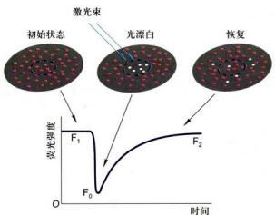
展开答案与图示核对
核心答案
可移动分数=(F₂−F₀)/(F₁−F₀)=40/80=50%。需扣除未被漂白的基线，并以实际被漂白的幅度归一；60/100把残余荧光当作恢复。
条件与限制
自编数值；假定已校正背景、整体漂白且检测线性，图未给出这些数值。
图示核对
中文教材图 CN0072（图示说明不另计评分）
FRAP荧光漂白后信号恢复反映未漂白分子交换；校正背景和整体漂白后可用(F2-F0)/(F1-F0)估算可移动比例，不等于新合成率。
来源
CN02-S04 · 第四节 细胞及生物大分子的动态变化（仓库行420，未提供物理页码）
CN0072原文定位 · 原图
情境与数值题为自编教材推导，不是真题。
需看图图中Mfn1相关缺陷使线粒体碎片化。能否只凭颗粒增多断言分裂速度加快？还需哪类证据？
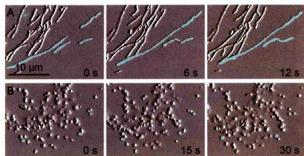
展开答案与图示核对
核心答案
不能，融合减少也可造成碎片化。应以时间序列或内容物混合等分别测融合与分裂，并结合膜电位、能量等功能读出。
条件与限制
形态终点不能单独识别网络变化来自哪一方向。
图示核对
中文教材图 CN0164（图示说明不另计评分）
Kaede红绿线粒体融合后变黄，结合时间序列支持内容物混合；颜色重叠单帧不能排除贴靠。
中文教材图 CN0166（图示说明不另计评分）
Mfn1突变造成片段化，可由融合减少导致；不能仅凭小颗粒增多断言分裂加速。
来源
CN07-S01 · 第一节 线粒体与氧化磷酸化（仓库行11，未提供物理页码）
CN0164原文定位 · 原图
CN0166原文定位 · 原图
情境与数值题为自编教材推导，不是真题。
需看图图示体外滑动实验中肌球蛋白固定在基底。为什么微丝在实验坐标中的移动方向与马达沿微丝的行走方向相反？
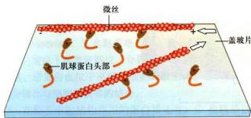
展开答案与图示核对
核心答案
固定的是马达，因此相对位移表现为轨道被反向推动；需区分微丝的正负端、马达相对轨道方向与轨道相对基底方向。
图示核对
中文教材图 CN0215（图示说明不另计评分）
固定肌球蛋白推动轨道微丝反向滑动，必须区分马达行走方向和实验中微丝移动方向。
来源
CN08-S01 · 第一节 微丝与细胞运动（仓库行9，未提供物理页码）
CN0215原文定位 · 原图
情境与数值题为自编教材推导，不是真题。
需看图观察图内时间而非文件顺序：同一微管末端交替延长和回缩，为什么应判为动态不稳定性，而不能直接叫踏车？
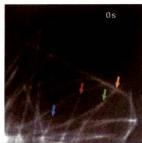
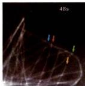
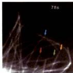
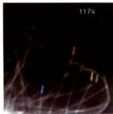
展开答案与图示核对
核心答案
动态不稳定性是同一端在生长与缩短之间转换；踏车需两端同时有相反净通量，单端的时间序列不足以证明。
图示核对
中文教材图 CN0232（图示说明不另计评分）
活细胞微管末端0秒时间帧，仅是动态起点，需与后续帧比较。
中文教材图 CN0233（图示说明不另计评分）
48秒微管末端位置变化支持生长或缩短的追踪。
中文教材图 CN0234（图示说明不另计评分）
78秒继续显示同根微管末端可改变方向，不能把快照当稳定长度。
中文教材图 CN0235（图示说明不另计评分）
117秒终帧与前三幅共同解释动态不稳定性。
来源
CN08-S02 · 第二节 微管及其功能（仓库行287，未提供物理页码）
CN0232原文定位 · 原图
CN0233原文定位 · 原图
CN0234原文定位 · 原图
CN0235原文定位 · 原图
情境与数值题为自编教材推导，不是真题。
需看图图中胰岛素与NKX6.1或PDX1共染，能否证明诱导细胞已具有成熟β细胞功能？
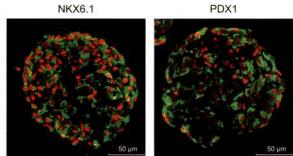
展开答案与图示核对
核心答案
不能。共染支持相关身份，还需检验胰岛素合成来源、葡萄糖刺激分泌等成熟功能。
图示核对
中文教材图 CN0417（图示说明不另计评分）
胰岛素与NKX6.1或PDX1共染支持胰岛β细胞相关身份；不能单凭共染证明成熟葡萄糖刺激分泌功能。
来源
CN14-S02 · 第二节 干细胞（仓库行140，未提供物理页码）
CN0417原文定位 · 原图
情境与数值题为自编教材推导，不是真题。
需看图按血糖曲线，移植后改善而约第42天取出移植物后重新升高。这个干预支持什么，不能独自证明什么？
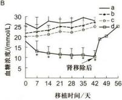
展开答案与图示核对
核心答案
支持血糖改善依赖移植物；不能独自证明全部作用机制、长期安全性或所有患者中的疗效。
图示核对
中文教材图 CN0418（图示说明不另计评分）
移植后血糖改善、约42天移除移植物后再升高，支持改善依赖移植物；不单独证明长期安全性或排除其他作用机制。
来源
CN14-S02 · 第二节 干细胞（仓库行140，未提供物理页码）
CN0418原文定位 · 原图
情境与数值题为自编教材推导，不是真题。
需看图比较低与高传代IMR90细胞图，SA-β-gal阳性及大而扁平形态增多，为什么仍需增殖读出才能判衰老？
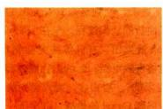
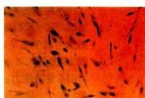
展开答案与图示核对
核心答案
染色和形态为衰老相关证据但不完全特异；需结合持续增殖停滞、适当刺激后不易恢复等证据，并控制密度、培养及染色条件。
图示核对
中文教材图 CN0419（图示说明不另计评分）
较低传代IMR90细胞较小、SA-β-gal阳性少；比较应统一密度、培养及染色条件。
中文教材图 CN0420（图示说明不另计评分）
较高传代IMR90出现大而扁平及SA-β-gal阳性增多；染色与形态提示衰老，但需增殖停滞等指标共同判断。
来源
CN15-S01 · 第一节 细胞衰老（仓库行13，未提供物理页码）
CN0419原文定位 · 原图
CN0420原文定位 · 原图
情境与数值题为自编教材推导，不是真题。
需看图图中斑马鱼突变体TUNEL信号比对照多。若没有caspase证据，最稳妥的结论与后续检验是什么？
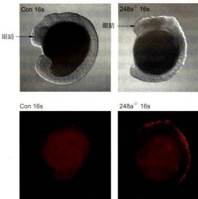
展开答案与图示核对
核心答案
先报告DNA断端增加；结合核形态、膜完整性、caspase活化及机制干预判定死亡类型，不能单凭TUNEL定为caspase依赖凋亡。
图示核对
中文教材图 CN0422（图示说明不另计评分）
斑马鱼突变体TUNEL信号增多提示DNA断端增加；不能仅凭TUNEL认定全部阳性细胞为caspase依赖凋亡。
来源
CN15-S02 · 第二节 细胞程序性死亡（仓库行69，未提供物理页码）
CN0422原文定位 · 原图
情境与数值题为自编教材推导，不是真题。
需看图图中的α表示物镜接收光锥的半角。若全角为60°、介质折射率n=1.5，按NA=n sinα计算数值孔径；把全角代入会错在哪里？
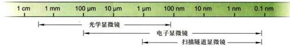
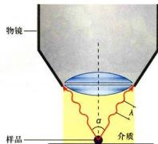
展开答案与图示核对
核心答案
α=30°，NA=1.5×sin30°=0.75；直接用60°把半角误当全角，得到约1.30，夸大数值孔径。
条件与限制
自编数值；图示给出几何关系，NA无量纲。
图示核对
中文教材图 CN0033（图示说明不另计评分）
相邻物点能否分开取决于分辨率；把模糊像继续放大不能新增细节。
中文教材图 CN0035（图示说明不另计评分）
数值孔径NA=n sinα，α为物镜可接收光锥的半角；增大NA可改善分辨率，油浸主要提高介质折射率。
来源
CN02-S01 · 第一节 细胞形态结构的观察方法（仓库行9，未提供物理页码）
CN0033原文定位 · 原图
CN0035原文定位 · 原图
情境与数值题为自编教材推导，不是真题。
需看图图中DNA含量较高的4C峰为什么不能仅凭这个指标拆成G2与M期细胞？
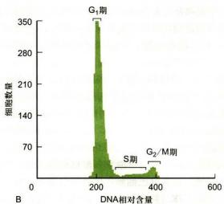
展开答案与图示核对
核心答案
标准二倍体周期中G2与M期均通常为4C，DNA总量相同；需加入分裂期标记或形态等独立指标，并排除双细胞及异常倍性。
条件与限制
DNA含量也不能单独区分G0与G1。
图示核对
中文教材图 CN0066（图示说明不另计评分）
DNA含量直方图：G1峰约2C、S期居中、G2/M峰约4C；不能单凭DNA含量分开G2与M或G0与G1。
来源
CN02-S02 · 第二节 细胞及其组分的分析方法（仓库行280，未提供物理页码）
CN0066原文定位 · 原图
情境与数值题为自编教材推导，不是真题。
需看图耳蜗毛细胞的“静纤毛”为什么不能仅凭名称当作9+2微管纤毛？
展开答案与图示核对
核心答案
静纤毛主要由肌动蛋白束支撑，是特殊微绒毛样结构；典型运动纤毛则有微管轴丝，命名相似不能代替骨架成分判别。
条件与限制
比较对象是耳蜗静纤毛与典型运动纤毛，纤毛结构本身也有例外。
图示核对
中文教材图 CN0080（图示说明不另计评分）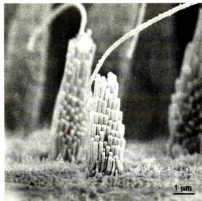
耳蜗毛细胞静纤毛内为肌动蛋白束；名称有纤毛不能据此判断为微管轴丝。
中文教材图 CN0102（图示说明不另计评分）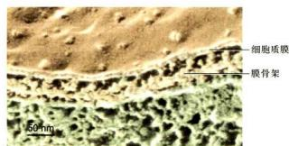
毛细胞静纤毛超微结构与肌动蛋白骨架联系；与微管纤毛应分清。
来源
CN03-S01 · 第一节 细胞质膜的结构模型与基本成分（仓库行13，未提供物理页码）
CN0080原文定位 · 原图
CN0102原文定位 · 原图
需看图按ABO糖链图，为什么O型不等于红细胞表面没有糖链？
展开答案与图示核对
核心答案
A与B转移酶在H抗原基础上分别加GalNAc或Gal；常见O型缺少这一步有效添加，但仍有H抗原等表面糖链。
条件与限制
图示常见ABO逻辑；不能用O型代替全部血型体系或罕见H抗原缺陷。
图示核对
中文教材图 CN0098（图示说明不另计评分）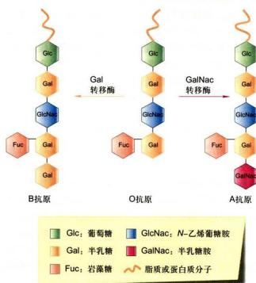
ABO以H抗原为前体：A加GalNAc、B加Gal，O通常不加这一步糖；O型不是表面完全没有糖链。
来源
CN03-S02 · 第二节 细胞质膜的基本特征与功能（仓库行237，未提供物理页码）
CN0098原文定位 · 原图
需看图教材电镜中初级与次级溶酶体的典型内容物形态有何差别，为什么不能只看大小命名？
展开答案与图示核对
核心答案
初级溶酶体内容物相对均一，次级溶酶体常含不均一的正在降解材料；大小及二维切面会重叠，需结合内容物、来源和酶标志。
条件与限制
是教材经典形态分类，不能把它当作全部动态成熟状态的绝对边界。
图示核对
中文教材图 CN0145（图示说明不另计评分）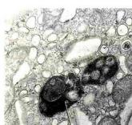
次级溶酶体内有不均一降解物，形态不同于均一初级溶酶体。
中文教材图 CN0146（图示说明不另计评分）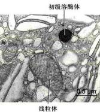
初级溶酶体、次级溶酶体和线粒体须依据结构及酶标志区分。
来源
CN05-S02 · 第二节 细胞内膜系统及其功能（仓库行67，未提供物理页码）
CN0145原文定位 · 原图
CN0146原文定位 · 原图
需看图强光条件下野生型与chup1突变体叶绿体分布不同。图首先支持哪类变化，为什么不能直接解释成叶绿素减少？
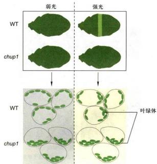
展开答案与图示核对
核心答案
首先支持叶绿体位置或重新分布反应异常；分布图并未直接测量叶绿素总量，需另测色素并控制照明、细胞状态等。
条件与限制
图示的特定遗传背景，不推广为全部避光运动机制。
图示核对
中文教材图 CN0177（图示说明不另计评分）
强光使野生型叶绿体避光重新分布，chup1突变反应异常；需区别位置变化与叶绿素合成减少。
来源
CN07-S02 · 第二节 叶绿体与光合作用（仓库行213，未提供物理页码）
CN0177原文定位 · 原图
情境与数值题为自编教材推导，不是真题。
需看图比较var2绿区、白区及相应质体图，为什么不能把所有花叶表型归为同一种叶绿素合成基因缺陷？
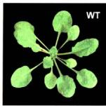
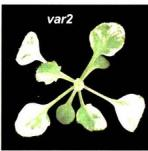
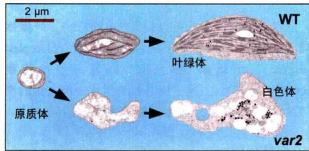
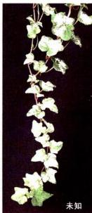
展开答案与图示核对
核心答案
var2图支持特定背景下质体发育异常；花叶可有不同原因，仅凭颜色不能推断具体基因，需结构、遗传及生化证据。
条件与限制
常春藤图的具体机制未确定，不从照片补造机制。
图示核对
中文教材图 CN0180（图示说明不另计评分）
WT叶片绿色，对照var2白斑用于分化异常比较。
中文教材图 CN0181（图示说明不另计评分）
var2叶片绿色／白色区体现叶绿体形成异常，但单幅照片不能给出所有花叶成因。
中文教材图 CN0182（图示说明不另计评分）
WT原质体形成正常叶绿体，var2白区形成未正常发育的质体。
中文教材图 CN0183（图示说明不另计评分）
常春藤花叶图的遗传机制标为未知，不由表型反推特定基因。
来源
CN07-S02 · 第二节 叶绿体与光合作用（仓库行213，未提供物理页码）
CN0180原文定位 · 原图
CN0181原文定位 · 原图
CN0182原文定位 · 原图
CN0183原文定位 · 原图
情境与数值题为自编教材推导，不是真题。
需看图看到叶绿体延伸小管连接或接近另一叶绿体，能否直接认定两个细胞器已经融合？
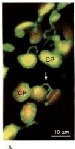
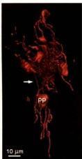
展开答案与图示核对
核心答案
不能。形态接近或小管相连不充分证明包膜融合和内容物混合；需时间序列及内容物交换等独立证据。
条件与限制
观察到的延伸小管用于形态与联系判断，不假定所有叶绿体都互相融合。
图示核对
中文教材图 CN0178（图示说明不另计评分）
叶绿体基质小管可形成动态连接，不等于所有叶绿体已融合成一个细胞器。
中文教材图 CN0179（图示说明不另计评分）
叶绿体延伸小管的第二视图支持动态形态观察。
来源
CN07-S02 · 第二节 叶绿体与光合作用（仓库行213，未提供物理页码）
CN0178原文定位 · 原图
CN0179原文定位 · 原图
情境与数值题为自编教材推导，不是真题。
需看图叶绿体分裂图中内外两侧机器隔着包膜。若破坏Arc6相关连接，为什么可影响外侧分裂机器定位，而不等于两侧由同一根环直接贯穿？
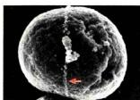
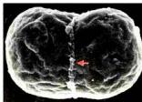
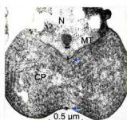
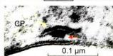
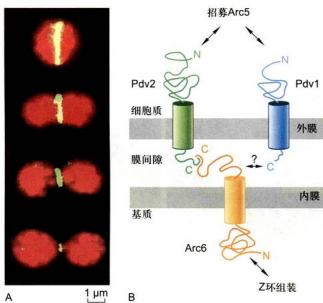
展开答案与图示核对
核心答案
FtsZ位于基质侧；Arc6跨内膜并通过外膜Pdv等联系胞质侧Arc5的招募和定位。连接受损可削弱跨膜协调，不能把内外环当一根贯穿脂双层的纤维。
条件与限制
据图作条件性推导；具体扰动表型须实验验证。
图示核对
中文教材图 CN0184（图示说明不另计评分）
红藻叶绿体分裂外环在表面缢缩处。
中文教材图 CN0185（图示说明不另计评分）
分裂外环随分裂收缩，作为另一阶段的表面证据。
中文教材图 CN0186（图示说明不另计评分）
超薄切面在缢缩处看到分裂环横截面，须区别表面环和二维切面。
中文教材图 CN0187（图示说明不另计评分）
放大切面显示内外环，二者由叶绿体包膜分隔。
中文教材图 CN0188（图示说明不另计评分）
FtsZ环在基质侧，Arc6跨内膜传位置给Pdv2，外膜Pdv1／Pdv2招募胞质侧Arc5。
来源
CN07-S02 · 第二节 叶绿体与光合作用（仓库行213，未提供物理页码）
CN0184原文定位 · 原图
CN0185原文定位 · 原图
CN0186原文定位 · 原图
CN0187原文定位 · 原图
CN0188原文定位 · 原图
情境与数值题为自编教材推导，不是真题。
需看图教材示例中核基因改变可导致叶绿体RNA编辑异常与幼叶黄化。为什么黄叶不能直接证明叶绿体DNA发生突变？
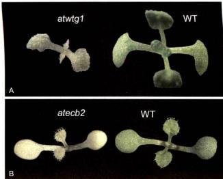
展开答案与图示核对
核心答案
叶绿体功能还依赖核编码调控及维护因子；核基因异常也可改变叶绿体表达和发育，颜色本身不能确定突变位于哪个基因组。
条件与限制
本题考查基因组来源的判别，未由照片推断具体未标明位点。
图示核对
中文教材图 CN0196（图示说明不另计评分）
核基因突变影响叶绿体RNA编辑可使幼叶黄化；表型不必由叶绿体DNA突变直接造成。
来源
CN07-S03 · 第三节 线粒体和叶绿体的半自主性及其起源（仓库行469，未提供物理页码）
CN0196原文定位 · 原图
情境与数值题为自编教材推导，不是真题。
需看图GFP-calumenin囊泡截图在文件中未必按时间排列。怎样利用它们判断运动，为什么仍不能凭截图确认马达身份？
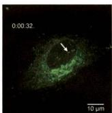
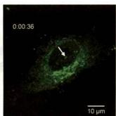
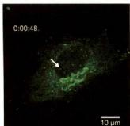
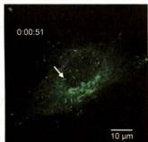
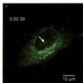
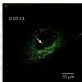
展开答案与图示核对
核心答案
先按图内时间排序，再追踪同一标记囊泡的位置变化；移动可支持运输，但马达身份需抑制、遗传或共定位等额外证据，单帧不能给出运动方向。
条件与限制
注意图内39、43、48、51秒等标注，不能用文件名顺序代替时间。
图示核对
中文教材图 CN0239（图示说明不另计评分）
GFP-calumenin荧光时间序列；分泌蛋白经ER和高尔基体形成囊泡，箭头显示运动；静态定位不能单独证明运输方向。
中文教材图 CN0240（图示说明不另计评分）
GFP-calumenin荧光时间序列；须按图内时间排序追踪同一囊泡，不按Markdown图片顺序判方向。
中文教材图 CN0241（图示说明不另计评分）
GFP-calumenin囊泡时间序列48秒；箭头位置需和其他时间点比较判断运动。
中文教材图 CN0242（图示说明不另计评分）
GFP-calumenin囊泡时间序列51秒；与48秒等帧比较，不凭单帧判定马达。
中文教材图 CN0243（图示说明不另计评分）
GFP-calumenin囊泡时间序列39秒；高尔基体附近荧光并非全部固定不动。
中文教材图 CN0244（图示说明不另计评分）
GFP-calumenin囊泡时间序列43秒；多帧追踪显示运输，马达身份需额外干预。
来源
CN08-S02 · 第二节 微管及其功能（仓库行287，未提供物理页码）
CN0239原文定位 · 原图
CN0240原文定位 · 原图
CN0241原文定位 · 原图
CN0242原文定位 · 原图
CN0243原文定位 · 原图
CN0244原文定位 · 原图
情境与数值题为自编教材推导，不是真题。
需看图果蝇翅成虫盘图中Uif与Wg信号呈不同空间分布。这支持哪类结论，为什么不能当作灯刷染色体的转录环证据？
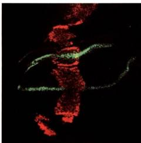
展开答案与图示核对
核心答案
支持特定组织区域的表达或标记分布；成虫盘组织图并非染色体侧环形态，不能据颜色或条带直接推出灯刷染色体结构、谱系或全部基因转录。
条件与限制
红色Uif与绿色Wg依图注定位，颜色本身不提供分子身份。
图示核对
中文教材图 CN0285（图示说明不另计评分）
图9-22果蝇翅成虫盘的空间表达：红色为dpp-GAL4介导的Uif、绿色为Wg，在前后/背腹边界分布不同；不是灯刷染色体。
来源
CN09-S03 · 第三节 染色质的复制与表达（仓库行325，未提供物理页码）
CN0285原文定位 · 原图
情境与数值题为自编教材推导，不是真题。
需看图心肌Fluo-3线扫描图出现局部短暂增强信号。图支持哪类Ca²⁺变化，为什么不能单凭它认定是IP₃受体释放？
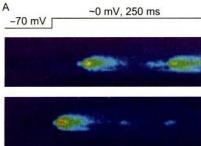
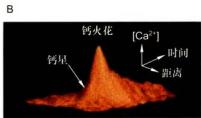
展开答案与图示核对
核心答案
支持局部、短暂胞内Ca²⁺升高，即钙火花类信号；荧光图不单独确定钙源，需结合RyR、质膜钙通道及其他相关通路的干预区分来源。
条件与限制
Fluo-3为Ca²⁺相关探针，成像强度还受加载、漂白及校准影响。
图示核对
中文教材图 CN0323（图示说明不另计评分）
Fluo-3心肌细胞共聚焦线扫描的时间—空间图显示局部短暂钙火花；荧光变化反映胞内Ca²⁺变化，钙源需配合RyR和膜通道干预判定。
中文教材图 CN0324（图示说明不另计评分）
钙火花三维荧光强度图显示局部Ca²⁺升高；质膜Ca²⁺入流可触发RyR簇的钙诱导钙释放，单幅荧光图不能独立证明因果。
来源
CN11-S02 · 第二节 G蛋白偶联受体及其介导的信号转导（仓库行145，未提供物理页码）
CN0323原文定位 · 原图
CN0324原文定位 · 原图
情境与数值题为自编教材推导，不是真题。
需看图图中先产生较多神经元，靶组织仅提供有限存活因子。这个机制怎样把最终神经元数目与靶组织规模联系起来？
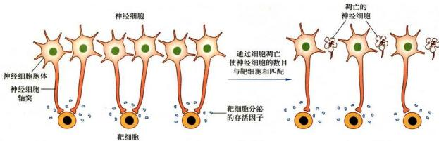
展开答案与图示核对
核心答案
神经元竞争有限存活信号，获得足够信号者存活，其他可凋亡；先过量生成再选择性清除，使存活数与可支持的靶细胞数量相适应。
条件与限制
某些发育神经元的示例；不表示全部神经元只依赖NGF或成年始终采用同一机制。
图示核对
中文教材图 CN0423（图示说明不另计评分）
靶组织提供有限存活因子，使部分发育神经元存活、其余凋亡，调整神经元数目；不是全部神经元只依赖NGF。
来源
CN15-S02 · 第二节 细胞程序性死亡（仓库行69，未提供物理页码）
CN0423原文定位 · 原图
需看图细菌质粒是独立细胞，还是细胞内的遗传元件？
展开答案与图示核对
核心答案
细胞内的遗传元件，通常为染色体外DNA。
来源
CN01-S02 · 第二节 细胞的同一性与多样性（仓库行77，未提供物理页码）杂交瘤HAT选择中，氨基蝶呤为何使补救合成途径变得关键？
展开答案与图示核对
核心答案
氨基蝶呤抑制依赖四氢叶酸的从头核苷酸合成；细胞必须利用HAT中的次黄嘌呤和胸苷，经HGPRT和胸苷激酶的补救途径维持核苷酸供应。
条件与限制
T是胸苷（胸腺嘧啶脱氧核苷），不是游离胸腺嘧啶。
来源
CN02-S03 · 第三节 细胞培养与细胞工程（仓库行348，未提供物理页码）跨膜α螺旋为什么提示膜内嵌入，分离这类蛋白通常需什么条件？
展开答案与图示核对
核心答案
跨膜α螺旋外侧疏水，稳定嵌入脂双层，分离整合膜蛋白通常需去垢剂；约20个连续疏水残基可提示跨膜区，但不能单凭序列确定全部拓扑。
来源
CN03-S01 · 第一节 细胞质膜的结构模型与基本成分（仓库行13，未提供物理页码）水孔蛋白通常如何避免把水通道变成质子泄漏通道？
展开答案与图示核对
核心答案
通道结构与电场使水分子取向等受限，打断连续质子传递条件。
图示核对
中文教材图 CN0108（图示说明不另计评分）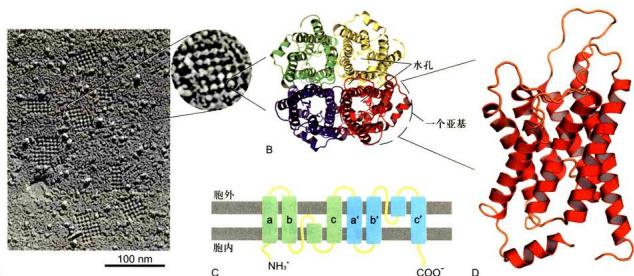
典型水通道每个单体有水孔，水单列通过并排斥H⁺等离子；不是四聚体中央孔通水。
英文少量对照 EN1262（图示说明不另计评分）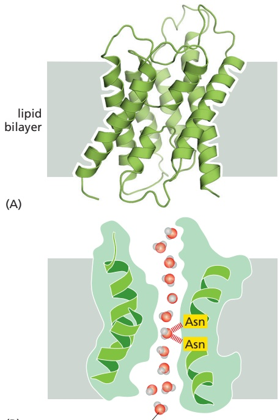
水通道每个单体有水孔；中央Asn是中性酰胺侧链，水分子取向及孔道结构阻断质子接力，不能把Asn写成带正电。
来源
CN04-S01 · 第一节 膜转运蛋白与小分子及离子的跨膜运输（仓库行9，未提供物理页码）
CN0108原文定位 · 原图
EN1262原文定位 · 原图
需看图哺乳动物UPR中的IRE1怎样被转为应答信号？
展开答案与图示核对
核心答案
应激促其活化，具有激酶及核酸内切酶活性。
图示核对
中文教材图 CN0138（图示说明不另计评分）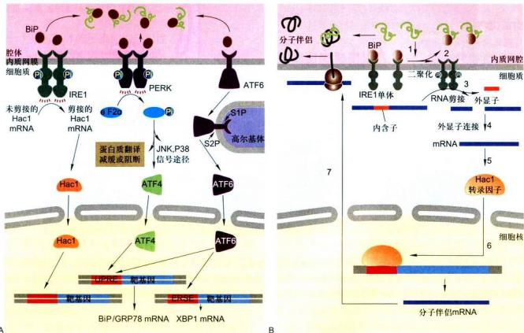
图把酵母IRE1-Hac1和哺乳动物PERK-ATF4／ATF6混排；哺乳动物IRE1剪接XBP1，HAC1是酵母例子。
来源
CN05-S02 · 第二节 细胞内膜系统及其功能（仓库行67，未提供物理页码）
CN0138原文定位 · 原图
需看图SNARE在膜泡运输中直接承担什么功能？
展开答案与图示核对
核心答案
特定配对与拉链式组装促进膜靠近和融合。
图示核对
中文教材图 CN0163（图示说明不另计评分）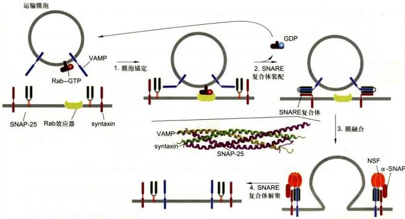
Rab-GTP及效应器介导锚定；VAMP、syntaxin和SNAP25组装促融合，NSF／α-SNAP拆解同膜cis复合体。
来源
CN06-S02 · 第二节 细胞内膜泡运输（仓库行124，未提供物理页码）
CN0163原文定位 · 原图
需看图把30nm纤维写成所有活细胞必经的固定包装层级，有什么问题？
展开答案与图示核对
核心答案
染色质体内可异质且不规则，经典层级模型有条件与证据限制。
图示核对
中文教材图 CN0275（图示说明不另计评分）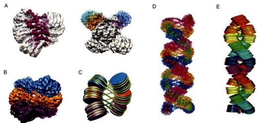
30nm染色质纤维结构研究模型；图示特定重构/研究条件，不应当作所有活细胞普遍必经层级。
中文教材图 CN0276（图示说明不另计评分）
DNA到中期染色体的经典多级折叠模型；保留考研模型同时注明30nm纤维体内存在条件和异质性。
来源
CN09-S02 · 第二节 染色质（仓库行115，未提供物理页码）
CN0275原文定位 · 原图
CN0276原文定位 · 原图
需看图细菌EF-G在翻译中直接做什么？
展开答案与图示核对
核心答案
促进核糖体转位。
图示核对
中文教材图 CN0299（图示说明不另计评分）
细菌延长循环EF-Tu递送氨酰tRNA、肽键形成、EF-G促移位；图中因子标注有OCR混淆，应依文字校正。
来源
CN10-S02 · 第二节 多核糖体与蛋白质的合成（仓库行110，未提供物理页码）
CN0299原文定位 · 原图
需看图TGFβⅡ型受体在经典TGFβ—Smad通路中做什么？
展开答案与图示核对
核心答案
募集并磷酸化Ⅰ型受体。
图示核对
中文教材图 CN0336（图示说明不另计评分）
TGFβⅡ型受体→Ⅰ型受体→Smad2/3→Smad4复合物入核；受体为Ser/Thr激酶，与RTK不同。
英文少量对照 EN1682（图示说明不另计评分）
TGFβⅡ型受体磷酸化Ⅰ型，Ⅰ型作用R-Smad，随后与Smad4组装入核；不是Ⅰ型先激活Ⅱ型，也不是受体酪氨酸激酶。
来源
CN11-S03 · 第三节 介导并调控细胞基因表达的受体及其信号通路（仓库行334，未提供物理页码）
CN0336原文定位 · 原图
EN1682原文定位 · 原图
需看图condensin与cohesin的主要作用有何区别？
展开答案与图示核对
核心答案
condensin主要参与染色体凝缩和组织，cohesin主要维持姐妹染色单体粘连；两者不能相互替代。
图示核对
中文教材图 CN0356（图示说明不另计评分）
SMC结构：长卷曲螺旋臂、铰链和ATP酶头；cohesin的SMC1/3维持姐妹联系，condensin的SMC2/4组织凝缩，二者不能互代。
来源
CN12-S02 · 第二节 细胞分裂（仓库行148，未提供物理页码）
CN0356原文定位 · 原图
需看图LOH表示哪类等位状态变化，是否必然减少DNA拷贝数？
展开答案与图示核对
核心答案
原先杂合的位点不再表现两种等位信息；可因删除导致，也可经有丝分裂重组出现拷贝数不变的LOH。
条件与限制
在肿瘤抑癌基因背景中，丢失正常等位基因可促进功能丧失；LOH本身并不保证丢的总是正常等位。
图示核对
中文教材图 CN0401（图示说明不另计评分）
错误分离/染色体丢失及有丝分裂重组可造成LOH；后者可以拷贝数不变，区分正常等位信息丢失与整段DNA必然删除。
来源
CN13-S02 · 第二节 癌细胞（仓库行193，未提供物理页码）
CN0401原文定位 · 原图
需看图启动caspase怎样在适配平台上活化，并开启下游执行酶？
展开答案与图示核对
核心答案
适配平台使启动caspase集中并促进二聚活化，随后激活执行caspase；不能把所有启动酶的初始活化都概括为必须先蛋白水解切割。
图示核对
中文教材图 CN0429（图示说明不另计评分）
启动caspase由适配平台诱导接近和二聚而活化，执行caspase通常需切割；不是全部caspase都必须先切割才活化。
英文少量对照 EN1997（图示说明不另计评分）
启动caspase的关键早期步骤是适配平台诱导接近和二聚；切割与后续成熟不能被当作所有启动酶唯一的初始激活机制。
来源
CN15-S02 · 第二节 细胞程序性死亡（仓库行69，未提供物理页码）
CN0429原文定位 · 原图
EN1997原文定位 · 原图
需看图Smac/DIABLO与细胞色素c释放后促进凋亡的作用有何区别？
展开答案与图示核对
核心答案
Smac主要解除XIAP等抑制；细胞色素c促进Apaf1凋亡体组装及caspase-9活化。二者不是同一蛋白家族的等效成员。
图示核对
英文少量对照 EN2010（图示说明不另计评分）
Smac/Omi解除XIAP对caspase的抑制，细胞色素c启动Apaf1平台；两个促进凋亡的作用步骤不同。
来源
CN15-S02 · 第二节 细胞程序性死亡（仓库行69，未提供物理页码）
EN2010原文定位 · 原图
需看图为什么缝隙连接主要归为通讯连接？
展开答案与图示核对
核心答案
相邻细胞的半通道对接形成跨两膜的通路，交换小离子及小分子；主要功能不是把承力骨架连成锚定结构。
图示核对
中文教材图 CN0441（图示说明不另计评分）
连接子蛋白每个有4个跨膜段，6个组成半通道，两个半通道对接共12个亚基；通透小离子及分子，约1 kDa为粗略范围而非统一硬阈值。
中文教材图 CN0442（图示说明不另计评分）
电突触经缝隙连接直接传离子，化学突触经递质释放与受体作用；速度和信号形式不同。
来源
CN16-S01 · 第一节 细胞连接（仓库行11，未提供物理页码）
CN0441原文定位 · 原图
CN0442原文定位 · 原图
需看图蛋白聚糖核心蛋白与GAG链的关系是什么？
展开答案与图示核对
核心答案
GAG链共价连于核心蛋白；不能把游离透明质酸等同核心蛋白。
图示核对
中文教材图 CN0456（图示说明不另计评分）
图示常见GAG经Ser连接木糖-Gal-Gal-GlcA四糖；不能推广全部GAG，硫酸角质素的连接方式不同。
来源
CN16-S03 · 第三节 细胞外基质（仓库行221，未提供物理页码）
CN0456原文定位 · 原图
需看图